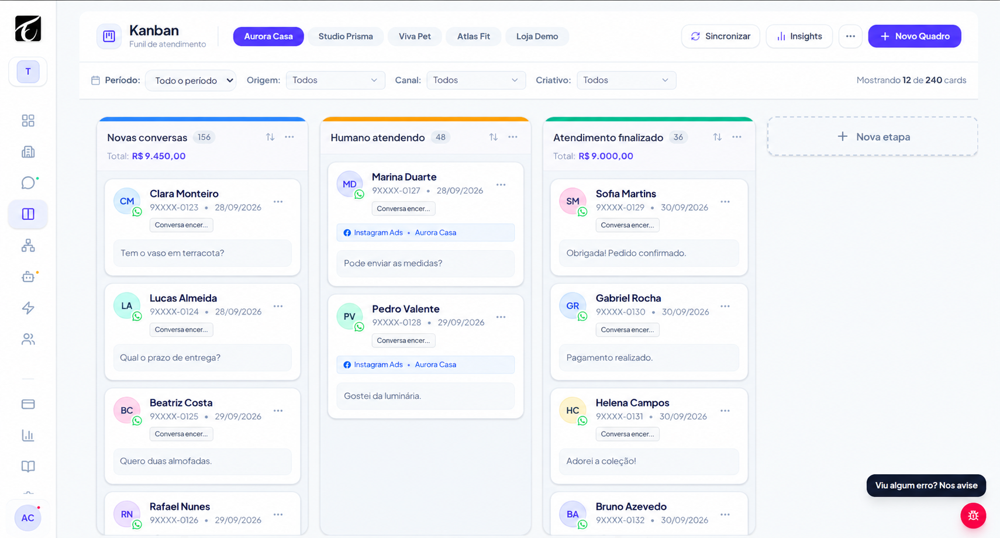
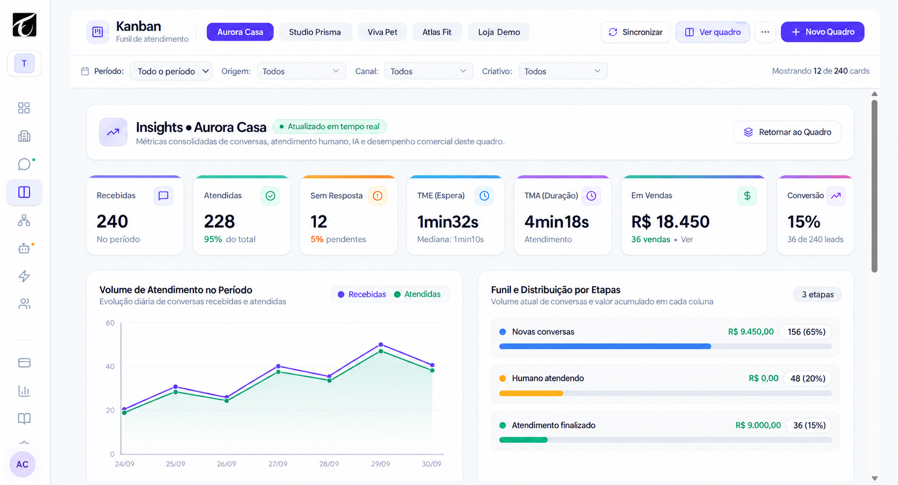
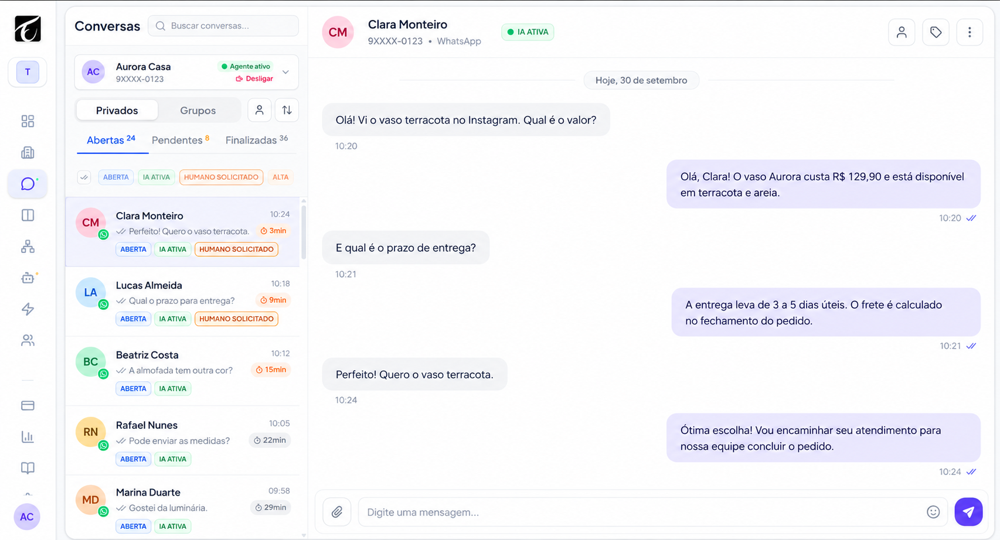

Conversas em
vários lugares?
Centralize seus canais e mantenha o histórico à mão para dar continuidade a cada atendimento.
Contexto em uma única telaChega de conversas espalhadas e clientes sem acompanhamento.
Reúna seus canais, sua equipe e suas vendas em um só lugar.
Com inteligência artificial. E um investimento que faz sentido.


CRM · KanbanOrganize o funil e acompanhe suas negociações em uma visão só.
Seus clientes já estão aqui.
Sua equipe também pode estar.
Quando tudo fica espalhado, sua equipe trabalha mais
e o cliente espera. Dá para fazer diferente.
Centralize seus canais e mantenha o histórico à mão para dar continuidade a cada atendimento.
Contexto em uma única telaOrganize os atendimentos da equipe e identifique quem está acompanhando cada conversa.
Mais clareza para toda a equipeVisualize suas negociações no CRM e acompanhe o avanço de cada oportunidade.
Negociações com acompanhamentoWhatsApp, Instagram e múltiplos atendentes conectados. Organize sua operação sem depender de celulares e conversas separados.
Configure o conhecimento e o comportamento do agente para agilizar respostas. Sua equipe entra na conversa quando precisar.
“Quais serviços vocês oferecem?”
Organize contatos por etapa no Kanban. Tenha clareza sobre quem chegou, quem está negociando e quem precisa de atenção.
Acompanhe os indicadores de atendimento e consulte relatórios para entender o movimento da sua operação.
O atendimento não precisa ficar preso ao computador. Acesse o Solução Bot pelo navegador do celular e acompanhe as conversas e oportunidades de onde estiver.

Telas com dados fictícios, em movimento.
Apresentação adaptada para celular.
Atendimento, vendas e automações conectados.
Menos ferramentas para administrar. Mais controle do seu negócio.
| O que sua operação precisa | Quando está separado | No Solução Bot |
|---|---|---|
| CRM e gestão de contatos | CRM separado, como RD Station CRM | Na mesma plataforma |
| Funil de vendas | Quadros e controles separados | Kanban integrado |
| Multiatendimento | Uma ferramenta para a equipe atender | Equipe e canais juntos |
| Automação de Instagram | Ferramenta dedicada, como ManyChat | Automação integrada |
| Automações de fluxo | Fluxos em outra ferramenta | Dentro da operação |
| Agendamento de mensagens | Envios dependem de um controle à parte | Mensagens programadas |
| Relatórios e dashboards | Indicadores em telas separadas | Visão do atendimento |
| Agentes de IA | Inteligência artificial em outra solução | IA + atendimento humano |
| 8 frentes da sua operação | Vários controles | 1 plataforma conectada |
Comparação por finalidade de uso, sem afirmar equivalência integral entre produtos. A substituição depende dos recursos utilizados e dos limites contratados. RD Station e ManyChat são marcas de seus respectivos titulares, sem afiliação com o Solução Bot.
Em breve, relatos de clientes sobre atendimento,
organização e acompanhamento de oportunidades.
Depoimento de cliente em breve.
Relato da equipe em breve.
História de cliente em breve.
Compare as opções para levar sua operação ao próximo passo.
Uma proposta para quem quer organizar o atendimento e os contatos.
Uma proposta para quem quer conectar atendimento, CRM e automação.
Uma proposta para operações com necessidades específicas.
Entenda como o Solução Bot
pode fazer parte da sua rotina.
Não. Ele reúne atendimento, equipe, inteligência artificial, CRM e relatórios. O objetivo é dar uma visão organizada das conversas e das oportunidades do seu negócio.
A proposta é centralizar esses canais na mesma operação. As conexões e os limites disponíveis devem ser conferidos na opção contratada.
Sim. A plataforma combina agentes de inteligência artificial e atendimento humano. Sua equipe pode assumir as conversas conforme a necessidade da operação.
Sim. O CRM com Kanban permite organizar oportunidades por etapa e acompanhar as negociações em um funil visual.
Você pode acessar o Solução Bot pelo navegador do celular. Hoje ele funciona como aplicativo web, sem depender de um aplicativo publicado nas lojas.
Sim. O Solução Bot oferece usuários ilimitados. Consulte as condições do plano para conexões, recursos e demais limites da operação.
Os valores e a composição dos planos estão em definição. O Solução Bot oferece usuários ilimitados; conexões, recursos e demais condições serão informados em cada opção.
Conversas, equipe e oportunidades. Tudo conectado com o Solução Bot.
Encontrar a solução para minha empresa